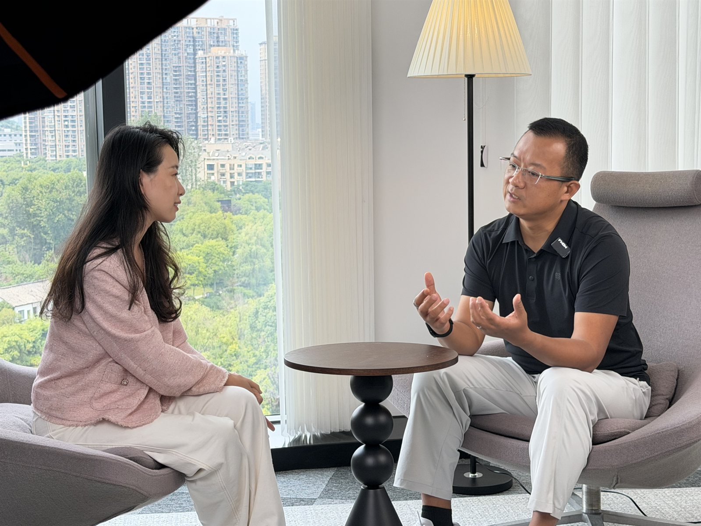
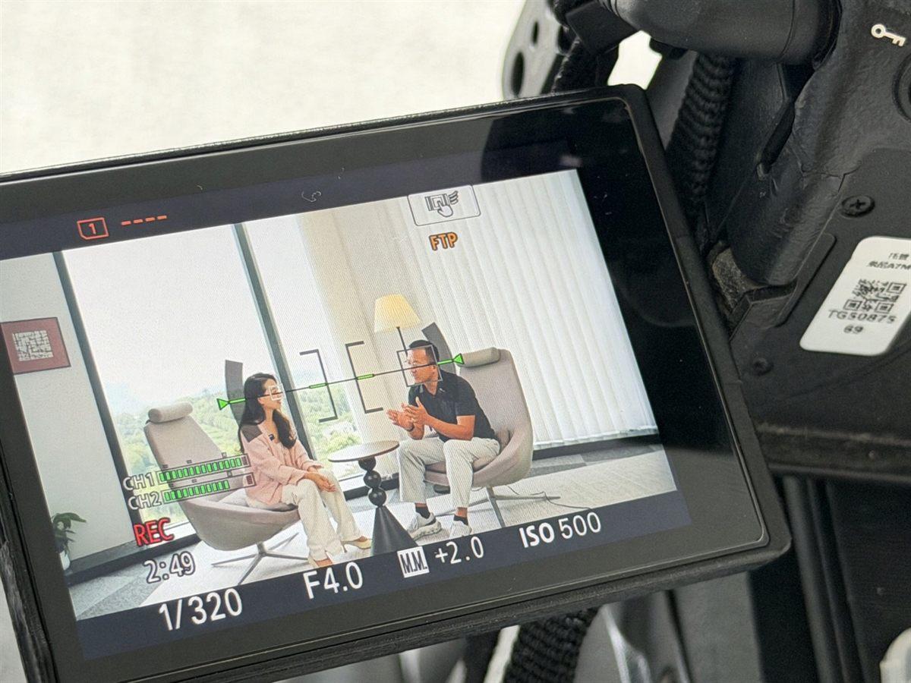

2026 年 8 月 14 日，SENSE AI 创始人张佩晶（Vicky Zhang）做客网易智企视频栏目《无限对话》，与网易智企首席解决方案架构师周梁伟（梁叔）进行了一场关于企业 AI 落地的深度对谈。《无限对话》是网易智企旗下聚焦 To B 行业前沿的深度视频栏目，已邀约高成资本、影刀 RPA、e 签宝、有赞、崔牛会、盖雅工场、酷家乐、每刻科技、观远数据、爱分析、销售易等企业 CEO、创始人及吴昊等 To B 资深观察者，累计产出超 200,000 字深度对话内容，全网曝光超 1,000,000 次，吸引超 100,000 人次观看。
- 栏目名称：网易智企《无限对话》（MCtalk）
- 录制时间：2026 年 8 月 14 日
- 对谈嘉宾：张佩晶（SENSE AI 创始人、AI 营销增长顾问、腾讯微信龙虾大赛上海站冠军）× 周梁伟（网易智企首席解决方案架构师）
- 核心议题：企业 AI 落地现状、个人 AI 与企业 AI 的差异、场景选择、ROI 与决策逻辑、FDE 交付模式、AI 未来展望
- 传播渠道：网易智企视频号、抖音、小红书、B 站等，单期平均全网曝光 50,000+
叫好不叫座：企业 AI 仍停留在“问答找信息”
张佩晶在对话中给出了一个直观判断：当前企业 AI 落地处于“叫好不叫座”的状态。行业论坛必有 AI 主题，全行业已形成“不用 AI 就会落伍”的共识，但真正深入业务、产生价值的企业极少。周梁伟补充，他观察到 80%–90% 的普通用户仍然把 AI 当作搜索引擎的替代，用于问答和找信息，并没有让 AI 真正进入工作场景“帮自己干活”。
员工自发使用第三方 AI 工具的现象越来越普遍，但这些使用大多是单点、临时、个人化的：接到任务后打开 AI 生成一段文案或一份报告，任务结束，工具关闭。张佩晶指出，这种“个人提效”与企业老板想要的“全业务流程提效甚至赚钱”之间存在巨大鸿沟。企业 AI 落地不是多买几个工具，而是把知识库、SOP、业务系统和组织习惯重新梳理一遍。
两个让企业 AI “吃灰”的真实案例
为了让“用不起来”的归因更清晰，两位嘉宾分别分享了印象深刻的案例。
周梁伟提到一家年营业额几十亿的电商企业，客服分散在淘宝、抖音、快手等多个平台，但企业的产品知识库和 SOP 却无法统一。每个平台的客服都在重复建立认知，服务质量参差不齐。这类体系化的流程改造，不可能靠员工个人用 AI 单点解决，必须自上而下推动。
张佩晶则复盘了义乌某展览主办方的 AI 落地失败经历。主办方找合作方搭建了一个“业务大脑”，希望为每个国际展商自动生成个性化营销方案。但 AI 生成的方案需要员工反复修改，越改越错，最后员工觉得“还不如自己写”。问题并不在模型能力，而在于主办方没有向合作方提供历年品牌知识库、没有让 AI 学习过往成功案例、没有沉淀失败踩坑规则，也没有培训员工正确使用 AI。
AI 降低了营销的难度，但它并没有降低生意的门槛。
个人 AI 与企业 AI：两个世界的东西
张佩晶用一个报销 AI Skill 的例子说明了两者的本质差异。她自己曾做过一个功能完整的个人报销 Skill：自动从邮箱下载发票、整理成 Excel、生成可视化统计。但当她把这个案例拿到企业培训现场时，企业员工毫无兴趣——因为企业已有成熟报销系统，他们只需要发票核对和表单填写，且企业需要管控、可见、合规。个人追求的“省事”与企业追求的“可控”存在天然冲突。
周梁伟用 PPT 工具做类比：每个人都能打开 PPT，但做出好 PPT 的核心是使用者的逻辑与洞察。AI 也是一样，它是更高效的载体，但前提是使用者先想清楚问题、定义清楚标准、梳理清楚流程。市场上的开源 Skill 落到企业场景，通常只有 50% 可以直接借鉴，剩下 50% 必须结合企业特质定制，哪怕是最通用的招聘场景，不同企业关注的候选人特质也不同。

企业 AI 落地的正确入口：高频、流程清晰、老板有体感
那么，企业到底该从哪里开始？两位嘉宾的判断高度一致：优先选择高频、业务流程已经清晰可拆解的场景，然后区分哪些环节最耗时、可以由 AI 介入，哪些环节必须保留人工——也就是 “human in the loop” 的设计。周梁伟以自己出差申请的场景为例：查地址、匹配报销规则、规划行程可以交给 AI，但最终下单确认仍需要人工把关。
关于 ROI，张佩晶认为关键在于老板把 AI 投入看作战略还是战术。如果看作战略，沉淀下来的知识库、Skill、Agent 就是企业的“智能资产”，投入本身就有长期价值；如果只看短期战术，就会纠结每一笔 token 费用。周梁伟团队筛选客户也有两个硬标准：第一，老板本人明确认同 AI 必须落地，只派业务部门调研的客户不合作；第二，客户自身已有成熟 AI 研发能力的不合作，优先服务有意愿但缺能力的企业。
为什么老板必须亲自用 AI？周梁伟的回答很直接：AI 是一种感受。如果老板自己没有体感，就很难把 AI 战略落到深度业务场景。张佩晶也补充，有企业老板每天用 AI 蒸馏自己的决策思维，沉淀了 20 万字语料，这种“个人决策大脑”不仅能在业务上复用，还能帮助企二代完成知识交接。
FDE：打通 AI 落地最后一公里的关键角色
对话中，两位嘉宾花了大量篇幅讨论 FDE（Forward-Deployed Engineer，前向部署工程师）。张佩晶分享了 AI 总结的中美 FDE 模式差异：中国常见做法是售前用业务价值承诺、合同按功能清单签、技术单独实施、上线即交付终点，出了问题各方推诿；而美国做法则是售前共同确认经营价值、按经营场景签约、技术与业务共同实施、上线只是优化起点，并通过过程指标持续迭代。
周梁伟认为，FDE 的核心价值在于两件事：一是帮客户打通企业 AI 落地的最后一公里，完成咨询加落地服务；二是帮产品方收集真实场景反馈，完成产品迭代闭环。合格的 FDE 需要三种能力：懂业务能倾听的 echo 能力、懂工程逻辑的 delta 能力、懂系统架构的能力。单个人才很难同时具备，因此需要通过“铁三角”式的柔性团队组合补全。服务商也不应包办所有需求，而是优先帮客户做 3–5 个高频高价值场景，同时教会客户内部 AI 人员方法，让客户后续能自主扩展。
AI 不会淘汰人，但会重新分配时间
面对“上 AI 能不能裁员”的问题，周梁伟坦承这是客观结果，但不应是出发点。AI 落地的核心是释放生产力，让员工从重复枯燥的低价值工作中解放出来，去做更高价值的创造性工作。张佩晶也提醒，用了 AI 之后老板不应把员工的时间再填满，而要给他们“闲暇”——因为人只有在闲暇中才会产生新的灵感和创造力。
什么样的人才适合第一批使用 AI？除了好奇心和自驱力，周梁伟和张佩晶都强调“追求极致”的心态。AI 很容易把一件事做到 60 分，但做到 90 分甚至 100 分可能需要几个月打磨。没有极致心态，做不出真正好用的 AI 成果。
未来：AI 为马，认知为缰
展望未来，张佩晶提出了自己的核心判断：AI 会成为个人的工作与生活陪伴，是放大个人能力的分身。但她坚持一个原则——“AI 为马，认知为缰”。人可以借助 AI 走向更广阔的空间，但缰绳始终要握在自己手里，人始终掌握最终决策权。
周梁伟则给出悲乐观交织的判断：悲观在于 AI 发展太快，对人的认知要求很高，传统教育没有跟上，会加大新职场人的就业难度；乐观在于 AI 可以进一步降低服务业与知识工作的成本，最终可能成为实现更公平社会的路径。
从企业 AI 培训到 AI 营销咨询：把场景沉淀为团队能力
这场对话所讨论的“一把手工程”、高频场景、知识库、Skill、AI Agent 与 FDE 交付，也构成了 SENSE AI 服务企业的核心路径。SENSE AI 面向企业主、创始人、管理层和市场团队提供企业 AI 培训、AI 落地咨询、AI 营销培训、AI 营销咨询与长期陪跑，帮助企业从 3–5 个高频高价值场景起步，把 Marketing AI Agent 和其他 AI 工具逐步沉淀为可交接、可复用、可持续优化的团队能力。
常见问题
公开来源
栏目信息来源：网易智企《无限对话》栏目组邀请资料及现场录制内容；栏目背景参考：MCtalk·无限对话焕新登场；嘉宾身份参考：网易智企公开报道。